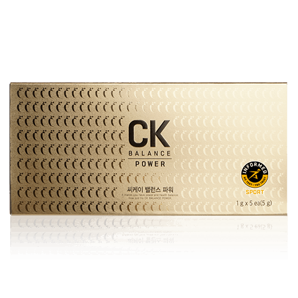

씨케이 밸런스 파워
흡수율 높인 국내산 컴파운드K
- 회원가입 없이 회원가
- 지쿱 본사 정품 직접 발송
- 5만 원 이상 무료배송
🎬 제품 영상 8개를 영샵 상세페이지에서 볼 수 있어요.
스페셜팩으로 더 알뜰하게
- 씨케이 밸런스 파워 4개 팩 — 회원가 465,000원 (개당 116,250원)
- 씨케이 밸런스 파워 11개 팩 — 회원가 1,248,000원 (개당 113,455원)
- 씨케이 밸런스 파워 23개 팩 — 회원가 2,500,000원 (개당 108,696원)
씨케이 밸런스 파워 상세 설명 · 원료와 특징
인삼, 과학을 만나다
놀라운 자연과 과학의 시너지를 통한 우리 몸의 건강한 조화와 밸런스 100% 국내산 6년근 인삼 사용 인삼발효분말의 면역 기능성 특허 보유 제너럴바이오의 MEBT 한 병이 전하는 인삼의 강력 에너지 언제 어디서나 간편하게 100% 국내산 6년근 인삼 사용 씨케이 밸런스 파워는 믿을 수 있는 100% 국내산 6년근 인삼만을 사용 합니다. 또한 100% 국내산 인삼의 잔류 농약 245종, 중금속뿐만 아니라 자체 부설 연구소를 통해 매회 로트별 품질 검사로 안전성 테스트를 통과한 원료만을 사용합니다.
국내 최대 CK 함유 (컴파운드 케이) 50mg 함유 - (컴파운드 와이) 20mg 함유 - (CK : 1g당 45mg~55mg를 자체 규격으로 적용) 컴파운드 케이 인삼을 원료로 하지만 인삼 자체에는 존재하지 않고 장내 특정 세균에 의해 생성되는 최종 대사산물로 인체에 바로 흡수되어 인삼의 효능을 극대화할 수 있는 활성 성분입니다.
인삼사포닌 체내흡수능력 검사 결과 한국인 4명 중 1명은 장내 미생물의 효소 비활성으로 인해 인삼이나 홍삼의 사포닌이 혈액으로 흡수될 수 있을 만큼의 컴파운드 케이로 분해되지 못해 제대로 흡수하지 못합니다.
(식품의약품안전평가원 약리연구과 보도자료 발췌) 2명 6명 보통 전혀 흡수 불가능 인삼 사포닌 흡수가능 최종 대사산물 사포닌 흡수율 사포닌 (컴파운드 K) 컴파운드 K 흡수 용이 일반사포닌과 컴파운드 K 흡수율 차이 컴파운드 K, 체내흡수율 90% 이상 컴파운드 K 흡수율 비교 단위: ng/mL 컴파운드 K 케이 를 함유한 발효 인삼 일반 인삼 (출처) "Journal of Ethnopharmacology"
기술적용 제너럴 바이오의 기술을 적용 컴파운드 케이의 흡수율을 강화 하였고, MC(Melt Concentrate) 농축기술 을 통해 컴파운드 케이의 생체 이용율을 강화 시킴 특허 원료 인삼발효분말 인삼발효분말의 면역 증강 관련 특허 보유 MEBT 전환 공정기술 을 이용한 CK 진세노사이드 인삼 Major 진세노사이드 4개의 당의 결합된 구조 미생물 발효 전환 공정기술 1개의 당이 결합된 최종 대사산물 구조
CK 전환 기술 최적화 체내 흡수율 용이함 안전성 및 안정성 을 통한 제조공정 제품의 안전성 확인 원료 부터 가공, 출고까지 안전하게 6년근 경작확인서 , 6년근 인삼 확인서, 원산지 확인 인삼 잔류농약검사 320가지 이상 3회 실시 홍삼 제조시 나오는 프탈레이트 검출 안됨 수삼 연근 확인서 인삼 경작 확인서 영농조합법인 풍기인삼제조자창 6년근 건삼 잔류농약검사결과 320가지 성분 통과 한병이 전하는
인삼의 강력 에너지 인삼의 효능을 높이기 위해 구증구포 방식의 번거롭고 힘든 과정 없이 100% 국내산 인삼만으로 바이오 컨버전스 기술을 접목시켜 인삼의 효능을 고스란히 1병에 농축하였습니다.
글로벌 안티도핑 인증 통과!
'인폼드 스포츠(Informed Sport)'는 175년 역사의 세계적인 스포츠 안티도핑 연구소 LGC가 운영하는 국제 안티도핑 테스트 프로그램입니다. 세계반도핑기구(WADA)가 지정한 금지 약물과 성분이 함유되지 않은 제품만 안티도핑 제품으로 인증받을 수 있습니다.
첨가물 무첨가 생산효율이나 제품 안정화를 위해 사용되는 부형제와 합성향료를 사용하지 않고 만들었습니다.
이산화규소 스테아린사마그네슘 합성향료 감미료 보존료 언제 어디서나 간편한 섭취 간편한 휴대성, 이동형 캡과 스푼으로 언제 어디서나 씨케이 밸런스 파워의 섭취가 편리합니다.
오프너 사용법 오프너를 병의 검은뚜껑 부분에 끼워 준 후 고리를 알루미늄 부위에 걸어서 위로 들어 줍니다.
스푼 사용법 1병에 5~7회 섭취양이므로 내용물을 적정 양 덜어서 섭취합니다.
이동용 뚜껑 사용법 휴대및 여행시 병에 끼워 사용합니다.
※오픈시 알루미늄 뚜껑에 손이 다치지 않도록 주의하여 주시기 바랍니다.
브랜드 스토리 MEBT 기술을 담은 씨케이 밸런스.
씨케이 밸런스는 놀라운 자연과 과학의 시너지를 통하여 우리 몸의 건강한 조화와 밸런스를 되찾아 드립니다.
씨케이 밸런스는 인삼의 일반사포닌을 MEBT 공정 기술을 통해 최종 대사산물인 컴파운드 케이로 전환함으로써 분자량을 작게 만들어 장내 미생물 여부에 관계없이 잘 흡수될 수 있도록 탄생시킨 CK 전문 브랜드입니다.
보도자료 실험 대상자 중 약 25% 는 사포닌이 분해되지 못하여 흡수되지 못하는 것 으로 나타났다
출처 : 식품의약품안전처 인삼 효능 사람마다 다른 이유는 장내 미생물 때문 출처 : 식품의약품안전처 보도자료 제품 정보 진세노사이드(Ginsenoside)란?
홍삼, 인삼에 있는 사포닌을 일컫는 말입니다. 홍삼, 인삼 사포닌은 특이한 화학구조를 가지고 있으며 홍삼, 인삼, 배당체란 의미로 진세노사이드(Ginsenoside)라 불립니다. 진세노사이드의 당들이 장내 미생물에 의해 분해되면 체내 흡수율이 용이한 형태인 컴파운드 케이가 됩니다. 컴파운드 케이는 남녀노소 누구나 흡수 가능합니다. 컴파운드 케이로 전환되면 사포닌 흡수율이 상승합니다. 홍삼의 기능성분인 홍삼 사포닌은 장내 미생물에 의해 분해되어야 체내에 흡수되지만 한국인 25%는 장내 미생물 효소 비활성화로 사포닌을 흡수하지 못합니다. (식품의약품안전처)
1. CK 밸런스 파워, 맛이나 색상이 균일하지 않고 항상 다른가요?
CK 밸런스 파워의 원재료인 100% 국내산 6년근 인삼은 지역별, 날씨별, 생산 날짜별에 따라 색상이나 맛에 약간의 차이가 있을 수 있습니다. 인삼을 화학적 공정을 거치치 않고 인삼의 효과를 그대로 추출하기 때문에 원재료의 맛이나 색상이 다를 수 있습니다. 만약 화학적 공정을 거친다면 맛이나 색상을 똑같이 만들 수 있습니다.
2. 인삼을 많이 먹으면 중독된다?
인삼은 중독성이 없으며 일반적으로 하루 평균 복용량이 6g이나, 사람에 따라서는 10배까지도 허용되고 일정량 이상 섭취한 것은 몸 밖으로 배출됩니다.
3. 출산한지 얼마 되지 않은 산모가 먹어도 되나요?
출산한 산모가 인삼을 먹게 되면 유선을 자극하여 유즙이 감소되는 경우도 있습니다. 되도록 모유 수유 시기가 끝난 후에 인삼을 복용하는 것이 좋습니다.
4. 열이 많은 사람이나 더운 지방에서는 인삼이 해롭다?
인삼은 열이 많은 사람에게는 열을 내려주고 열이 적은 사람에게는 열을 올려주는 정상화 작용을 합니다. 열이 많은 사람에게 좋지 않다는 말은 잘못된 상식입니다. 혈액순환을 원활하게 도와 신진대사 증가를 도와주는 것으로 일시적으로 대사량에 따라서 열감을 느끼는 분들이 있을 수 있지만 이는 체온을 상승시키거나 혈압을 올려주는 것이 아니라 인삼의 효능이 작용하면서 일시적으로 나타나는 현상입니다. 만약 감기로 인한 고열이라면 피하는 것이 좋으나 감기가 걸리기 전 예방이나 감기로 인한 기력을 회복할 시에 인삼의 효능이 도움을 줄 수 있습니다.
5. 인삼도 알레르기가 있나요?
사람에 따라 아주 드물게 알레르기 반응을 일으키는 경우도 있습니다. 이 경우, 인삼 섭취를 중단하면 이상 반응이 없어지나 의사와의 상담 후 복용할 것을 권해드립니다.
이런 분들께 권해드립니다.
면역력 증진 을 원하시는 분 기억력이 저하되어 걱정 되는 중년층 및 노년층 누적된 피로 로 힘들어하는 현대인 체력증진이 필요한 수험생 및 학생 일상생활에 활력 혈액순환 개선 이 필요하신 분 항산화 효과 를 원하시는 분 이 안 좋으신 분 간편하게 인삼을 섭취 하고 싶으신 분 가족들의 건강 을 챙기고 싶으신 분 각종 인증 사항 비코프인증 획득!
비코프인증(B-Corp Certified) 이란?
B-Corp은 비즈니스를 통해 사회 환경적 문제를 해결하고 사회에 긍정적인 영향을 끼치는 기업을 확대하기 위해서 2007년 BLab (미국비영리 조직)이 만든 글로벌 사회적 기업 인증 제도입니다.
가족친화우수기업 인증 획득!
가족친화인증 가족친화제도를 모범적으로 운영하는 기업 및 공공기관에 대하여 심사를 통해 인증을 부여하는 제도입니다. 가족친화인증 기업은 근로자가 일에 집중하도록 하여 기업 생산성과 경쟁력 강화하고 출산율 제고, 고용 안정 등으로 국가경제 발전에 기여할 뿐 아니라 가족친화경영 확산을 통한 근로자와 가족 구성원의 삶의 질을 향상시키는 바른 기업 문화를 확산 시킵니다.
ISO9001 인증 획득!
ISO9001은 국제표준화기구(International Organization for Standardization)에서 제정·시행하고 있는 품질경영시스템에 관한 국제규격입니다.
FSSC22000 획득!
IGC(INSTITUTE OF GLOBAL CERTIFICATION)에서 주는 식품안전경영시스템 적격하게 수립 및 유지에 대한 인증서 인증범위: 인삼제품 및 인삼파우더의 제조 글로벌 안티도핑 인증 통과
지쿱 본사 제품 상세페이지 내용을 옮겨 정리했어요.
상품정보제공고시
| 품명 | 씨케이 밸런스 파워 5vial |
|---|---|
| 식품의 유형 | 일반식품/기타가공식품 |
| 제조 및 판매원 | 제너럴바이오(주)/전라북도 남원시 송동면 용투산로254 |
| 위탁제조원 | 해당 없음 |
| 제조연월일, 유통기한 또는 소비기한(품질 유지기한) | 제품에 별도 표기 |
| 포장단위별 용량(중량), 수량 | 1g(Vial) X 5ea(5g) |
| 원재료명 및 함량(농수산물의 원산지 표시에 관한 법률에 따른 원산지 표기 포함) | 인삼발효추출분말 100% |
| 영양정보 | 총 내용량 : 1병당(1g) 총 내용량 당 함량 : 열랑 20kcal, 나트륨 5mg(0.2%), 탄수화물 4g(1.4%), 당류 0g(0%), 지방 0g(0%), 트랜스지방 0g(0%), 포화지방 0g(0%), 콜레스테롤 0mg(0%), 단백질 0g(0%) ※%영양성분 기준치/1일 영양성분기준치에 대한 비율 |
| 기능정보 | 해당없음 |
| 섭취량 및 섭취방법 | 1일 1회, 1회 200mg 섭취(1병을 5~7회 나누어 섭취하세요), 기호에 따라 요거트나 꿀 등에 섞어 드셔도 좋습니다. |
| 섭취 시 주의사항 및 부작용 가능성 | 1. 의약품(당뇨치료제, 혈액항응고제) 복용 시 섭취에 주의하십시오 2. 알레르기 체질 등은 개인에 따라 과민반응을 나타낼 수 있습니다. 특이체질, 알레르기 체질이신 분은 성분을 확인한 후 섭취하시기 바랍니다. 3. 어린이가 함부로 섭취하지 않도록 섭취 시 보호자의 지도, 감독 하에 섭취 시키십시오. 4. 이상 사례 발생 시 섭취를 중단하고 전문가와 상담 하십시오. 5. 섭취량 및 섭취 방법을 확인하고 섭취하여 주십시오. 6. 제품 개봉 또는 섭취 시 포장재에 의해 상처를 입을 수 있으니 주의하십시오. 7. 유통기한이 경과된 제품은 섭취하지 마십시오. |
| 질병의 예방 및 치료를 위한 의약품이 아니라는 내용의 표현 | 해당없음 |
| '유전자변형건강기능식품'에 해당하는 경우의 표시 | 해당없음 |
| 표시광고 사전심의필 | 해당없음 |
| 수입식품에 해당하는 경우 "건강기능식품에 관한 법률에 따른 수입신고를 필함"의 문구 | 해당없음 |
| 소비자 상담 문의 | 카카오톡으로 문의 주시면 지쿱 본사로 접수해 드립니다. |
건강식품 다른 제품
배송·교환·반품
지쿱 본사에서 직접 발송해요. 50,000원 이상 주문 시 무료배송, 50,000원 미만은 배송비 2,500원이에요. A/S·교환·반품은 카카오톡으로 문의 주시면 지쿱 본사로 접수해 드려요.